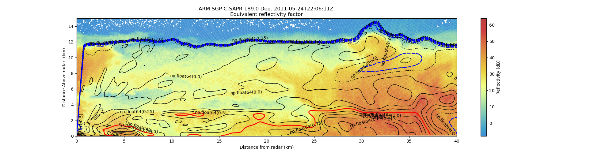

Note
Click here to download the full example code
Create an RHI plot with reflectivity contour lines from an MDV file#
An example which creates an RHI plot of reflectivity using a RadarDisplay object and adding differnential Reflectivity contours from the same MDV file.
print(__doc__)
# Author: Cory Weber (cweber@anl.gov)
# License: BSD 3 clause
import matplotlib.pyplot as plt
import pyart
from pyart.testing import get_test_data
import numpy as np
import scipy.ndimage as ndimage
filename = get_test_data('220629.mdv')
# create the plot using RadarDisplay
sweep = 0
# read file
radar = pyart.io.read_mdv(filename)
display = pyart.graph.RadarDisplay(radar)
fig = plt.figure(figsize=[20, 5])
ax = fig.add_subplot(111)
# plot reflectivity
# alpha=0.25 sets the transparency of the pcolormesh to 75% transparent against
# the default white. matplolib overlaps the edges of the pcolormesh and creates
# a visable border around the edge, even with the default of edgecolor set to
# 'none' the transparancy is effected. the flowing paramters are designed to
# compensate for that:
# edgecolors=(1.0, 1.0, 1.0, 0.1) sets the lines between patches to nearly
# transparent
# linewidth=0.00015 makes lines between patches very small
# antialiased=true removes moire patterns.
display.plot('reflectivity', sweep=sweep, vmin=-8, vmax=64.0, fig=fig,
ax=ax, colorbar_label='Reflectivity (dB)', alpha=0.75,
edgecolors=(0.5, 0.5, 0.5, 0.3), linewidth=0.001,
antialiased=True)
# Normal no alpha
# display.plot('reflectivity', sweep=sweep, vmin=-8, vmax=64.0, fig=fig,
# ax=ax, colorbar_label='Reflectivity (dB)', antialiased=True)
# get data
start = radar.get_start(sweep)
end = radar.get_end(sweep) + 1
data = radar.get_field(sweep, 'differential_reflectivity')
x, y, z = radar.get_gate_x_y_z(sweep, edges=False)
x /= 1000.0
y /= 1000.0
z /= 1000.0
# apply a gaussian blur to the data set for nice smooth lines:
# sigma adjusts the distance effect of blending each cell,
# 4 is arbirarly set for visual impact.
data = ndimage.gaussian_filter(data, sigma=4)
# calculate (R)ange
R = np.sqrt(x ** 2 + y ** 2) * np.sign(y)
R = -R
display.set_limits(xlim=[0, 40], ylim=[0, 15])
# add contours
# creates steps 35 to 100 by 5
levels = np.arange(-3, 4, 0.25)
# levels_rain = np.arange(1, 4, 0.5)
levels_ice = np.arange(-2, -0, 0.5)
levels_rain = [0.75]
# adds contours to plot
contours = ax.contour(R, z, data, levels, linewidths=1, colors='k',
antialiased=True)
# adds more contours for ice and rain, matplotlib supports multiple sets of
# contours ice
contours_ice = ax.contour(R, z, data, levels_ice, linewidths=2, colors='blue')
# contours heavy rain
contours_rain = ax.contour(R, z, data, levels_rain, linewidths=2, colors='red')
# adds contour labels (fmt= '%r' displays 10.0 vs 10.0000)
plt.clabel(contours, levels, fmt='%r', inline=True, fontsize=10)
plt.show()
Total running time of the script: ( 0 minutes 1.997 seconds)